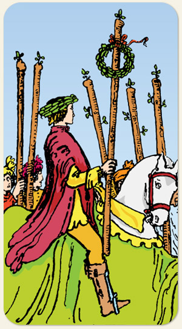

A reparação mais a energia do fogo, é um elemento que resolve os problemas ganhando, é a reparação por meio da conquista, superar os oponentes e a si mesmo, a resolução dos problemas do Cinco de Paus.
Desejo de fazer diferente para alcançar o resultado esperado. Loucura é fazer a mesma coisa e esperar um resultado diferente. Fazer valer a pena, sair do fundo do poço por meio da vontade de vencer, a vitória sobre si mesmo, caminhos confiáveis.
Positivo: A glória, o êxito e os louros. Força de superação, reconhecimento, mostra a vantagem de fazer as coisas do jeito certo, é a volta de uma batalha de forma triunfante.
Negativo: O triunfo do lado oposto, ameaças, intimidação, é amedrontar em vez de inspirar, falsa sensação de conquista, estar na defensiva.
Espiritualidade: Ataques de inimigos ou ajuda espiritual.
Símbolos: Homens, Cavalo Branco, Guirlanda, Coroa de Louros, Fita Vermelha.
Cores: Vermelho, Verde, Amarelo, Azul.